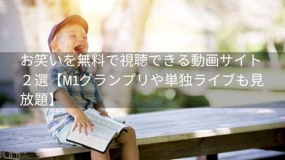
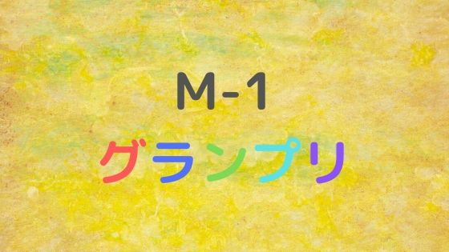
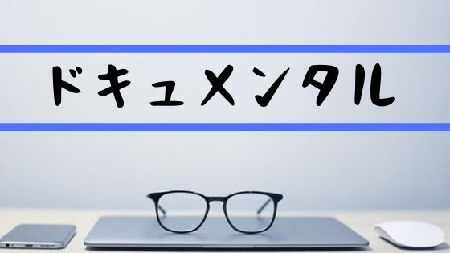
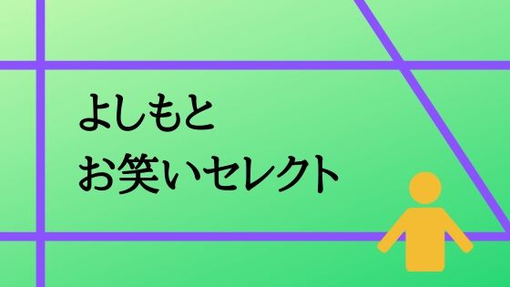
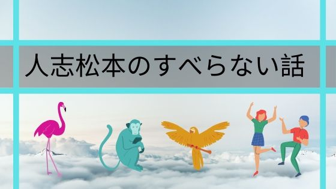
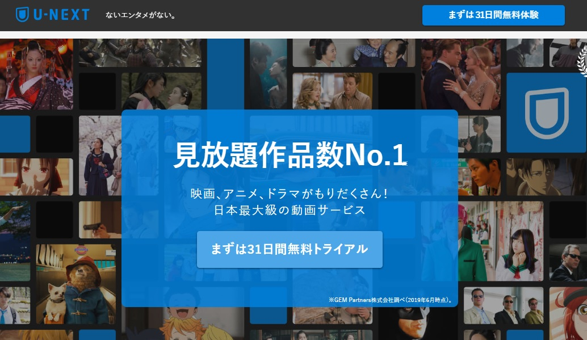

お笑いを無料で視聴できる動画サイト2選【M1グランプリや単独ライブも見放題】
爆笑のお笑いが無料で楽しめます。
暇なとき、笑いたい気分なとき、とにかく楽しみたい。
そんなときに無料で楽しめる動画サイトをご紹介したいと思います。

お笑い好きの私が満足したサイトをご紹介
- アマゾンプライムビデオ
- U-Next
詳しく説明していきますね。
アマゾンプライムビデオ
お笑いの王道M1グランプリの過去放送がほとんど視聴可能。
Amazonプライムオリジナル作品であるダウンタウンのお笑い番組「ドキュメンタル」。
このお笑いの２大番組が見れるのが特徴です。
無料視聴はこちらから⇒今すぐAmazonプライムを無料体験！
ドキュメンタルはCMでも話題になりました。
主なラインナップはこんな感じです。
- M-1グランプリ
- ドキュメンタル
- よしもとお笑いセレクト
- 人志松本のすべらない話
簡単に紹介しますね。
M-1グランプリ
M1グランプリの過去の放送を楽しめます。
流石は漫才の日本一決定戦というだけあってひたすら笑っていられます。
和牛やジャルジャル、トレンディエンジェル、メイプル超合金、どのコンビも本当に面白いです。
私が一番好きなのは2018年のスーパーマラドーナですね。
ドキュメンタル
密室で芸人同士が笑わせ合う笑わせサバイバル番組。
笑いをこらえている芸人さんを見ているとついつい笑ってしまいます。
よしもとお笑いセレクト
吉本芸人のオリジナル企画やライブの映像などがボリューム満点で見ることができます。
特におすすめなのがタカアンドトシの単独ライブ「タカトシ寄席 欧米ツアー2006」。
1時間半の動画なのですが、見始めるとずっと笑っていてあっという間に時間が奪われていました。
他にも次の芸人さんの動画があるので、好きな芸人さんの動画を見て楽しんでください。
人志松本のすべらない話
フジテレビで放送されていた「人志松本のすべらない話」。
単純に面白いです。電車の中で見ていたのですが、いきなりふき出してしまい恥ずかしかったのを覚えています。
小藪の「スノボ」の話は是非聞いてほしい作品ですね。
アマゾンプライムビデオは無料体験可能
アマゾンプライムビデオは本来月額410円かかりますが、30日間の無料体験が可能です。
無料の間に見つくして、飽きたら解約することも可能ですよ。
余談ですがこの無料体験。お笑い動画をみる以外にも暇つぶしに使える特典がいっぱいあるのでこちらも参考にしてくださいね。

U-NEXT
U-NEXT（ゆーねくすと）は「ないエンタメがない」をキャッチコピーとしているようにエンタメ動画が多いサイトです。
そのためお笑いの動画を視聴できるものが多いのが特徴です。
お笑い好きには嬉しい！
芸人たちの単独ライブ公演やネタのベストチョイスなどが豊富なので番組を見るというよりは見たいお笑いライブ探す感じが近いですね。
アマゾンプライムビデオは吉本芸人がほとんどでしたが、このU-NEXTでは吉本でない芸人の動画を視聴できるのです。
・東京03
・タイムマシーン3号
・バカリズム
・ナイツ
・ハライチ
・バイきんぐ
・アンジャッシュ
・おぎやはぎ
・ラバーガール
・ロッチ
・うしろシティ
・アンガールズ
特におすすめなのは「アンジャッシュ」のベストネタシリーズ。厳選された面白いネタでずっと笑っていられます。
U-NEXTも無料体験可能
U-NEXTは月額1990円とAmazonプライムビデオに比べて高めです。
お笑いを見るのであれば正直U-Nextも会員登録したいのですが少し高めなのが気になりますね。
もちろんこの記事は無料でお笑い動画を視聴するサイトをご紹介しているので安心してください。
このU-NEXTも31日間の無料体験があります。
年末や夏休みなど暇な時にまとめてみて、見終わったら解約も可能です。
お笑いを無料で視聴できる動画まとめ
いかがだったでしょうか？
一日中笑っていられて最高です。
電車の中や喫茶店で見るときは注意してくださいね。
急にふき出して恥ずかしい思いをしてしまうかも。
- アマゾンプライムビデオ
- U-NEXT
今回ご紹介したのはこの２つの動画視聴サイトですが、見れるお笑いの動画が違うのでどちらがいいかを選ぶのは難しいですね。
なので無料体験がホントありがたいなと思いました。
有料会員ですがU-NEXTはAmazonプライムビデオに比べて割高になっているのでほんとうに見たい動画があるかで考えてみてください。
それではよいお笑いライフを。